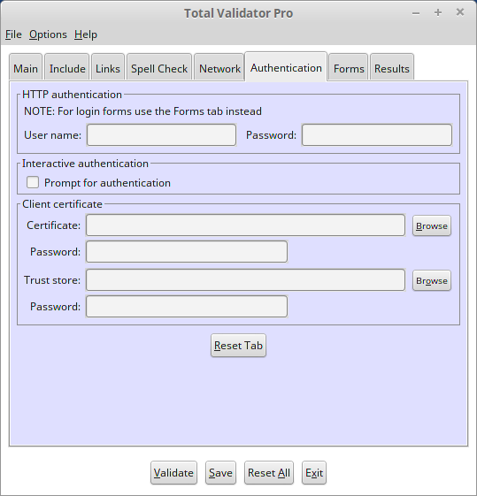

Introduction
All of the options that appear on the Authentication tab of the Pro tool are described below.

 top
topWeb server user/password
Many websites have secure areas that use BASIC, DIGEST or Windows (NTLM) authentication to protect them. In order to validate pages within these areas, enter the required user name and password here.
When connecting to a server using Windows (NTLM) authentication you
may need to supply a domain name. In this case enter the domain name
and user name separated by a backslash into the user name field. For
example MYDOMAIN\myuser.
Note that although the password is masked with asterisks when you type it in, it will still be stored as plain text if you save your workspace when you exit the tool. So you may wish to use the interactive option instead.
Interactive authentication
Rather than entering authentication details above, you can choose to be prompted for them each time they are needed using this option. In this case a dialog box will be displayed with the page you are trying to access and the 'realm' that it resides in, prompting you to enter a valid user/password combination.
This may also work with some authenticating proxy servers. If so, any proxy authentication details you enter will be cached in memory until the tool is restarted to save you having to enter them more than once.
Client certificate
Some websites (typically on intranets) require that the browser is authenticated with a digital certificate. If this is the case for your website then complete this section so that Total Validator will be authenticated and able to validate the website.
Enter the path of your certificate or 'Browse' to it and then enter the password used to protect it. Note that this certificate must be in standard #pkcs12 format to be accepted, so you may have to convert it first.
If the Certificate Authority (CA) used to sign your Client certificate is a third party such as Verisign, then there should be nothing else to do. However, normally organisations use their own CA and so you need to tell Total Validator about this using a 'Trust Store' by filling in the additional Trust Store and Password fields.
A Trust Store is a standard Java Key Store (.jks file) which can be created and populated with your
CA's public certificate to create a Trust Store. Here is an example of how to do this using the Java
keytool command found in the standard Java installation folder to create a store store.jks
with a password of pwd:
keytool -importcert -keystore store.jks -alias CA -file ca.crt -v -noprompt -storepass pwd
If there is a certificate chain then repeat the above for all of the internal certificates in the chain, using a unique alias for each one
If your website's SSL certificate is self-signed you will also need to add the SSL certificate to the Trust Store as well:
keytool -importcert -keystore store.jks -alias SSL -file ssl-cert.pem -v -noprompt -storepass pwd